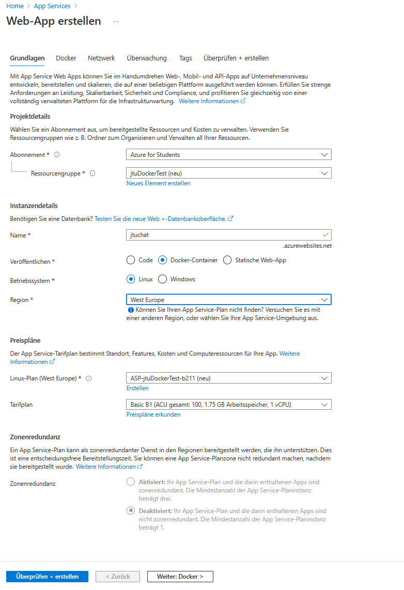
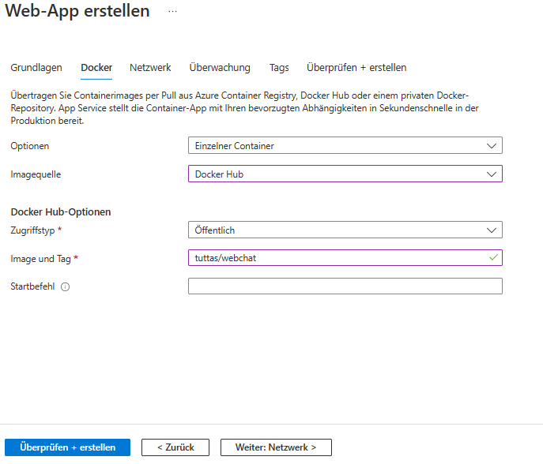
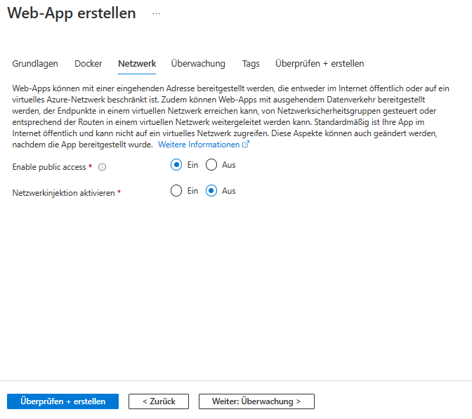
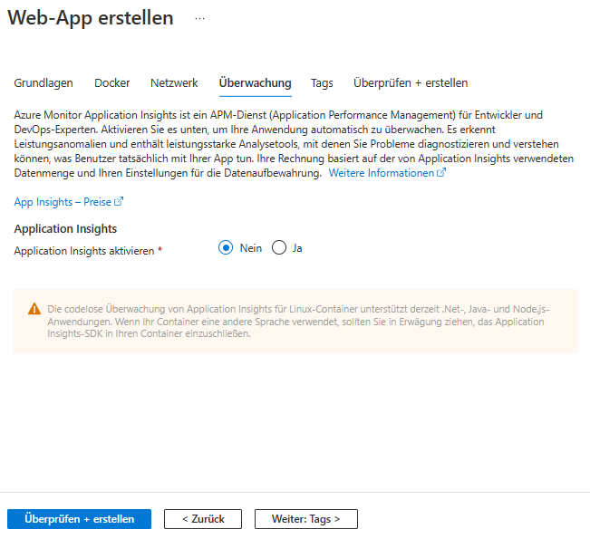
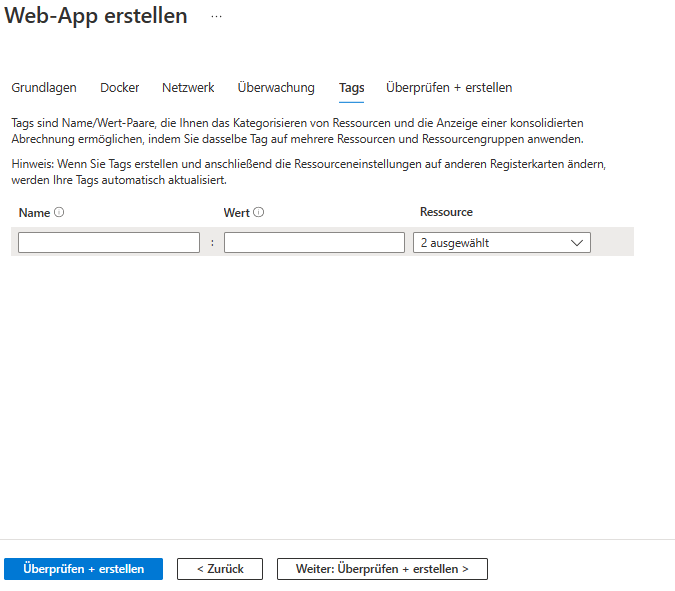
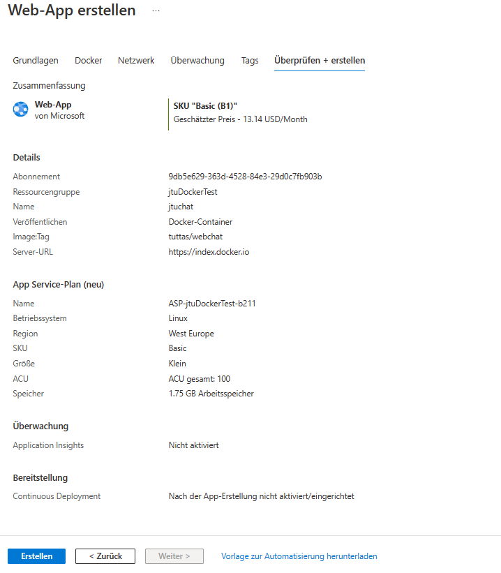
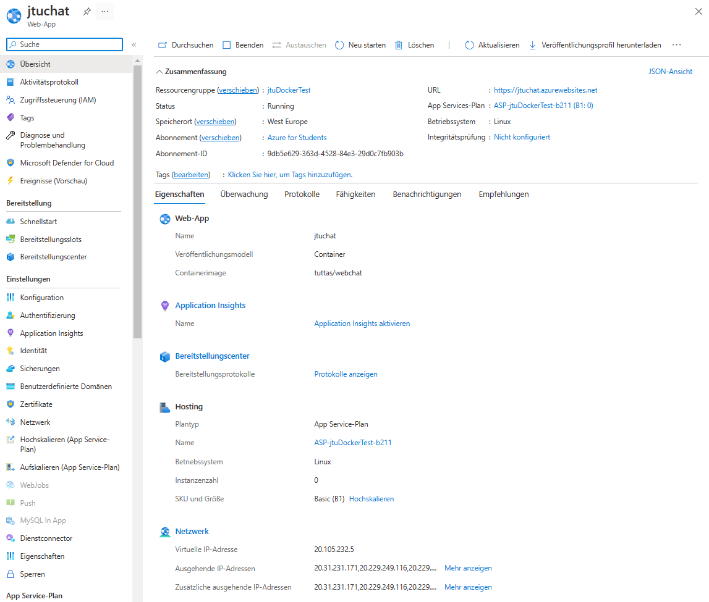
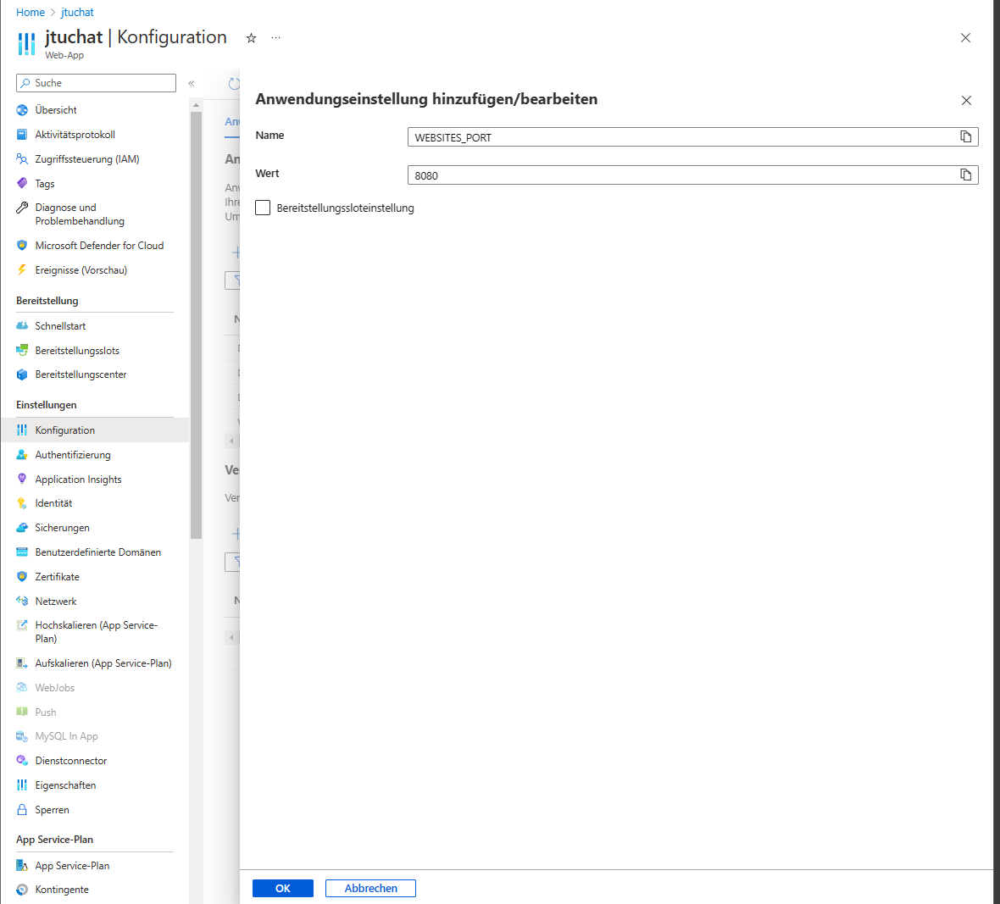
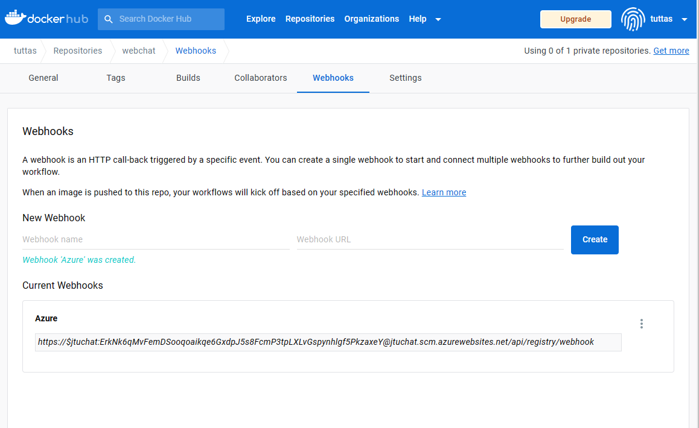

Hosten bei Azure
Im nächsten Schritt soll der Container bei Azure gehostet werden. Dazu muss nach der Anmeldung bei Azure hier eine Azure App Service erstellt werden.
Erstellen einer Web App






Anschließend erhält man eine Übersicht der Web App und auch schon eine URL unter der diese aufgerufen werden kann.

Konfigurieren der Web App
Über den Menüpunkt Konfiguration muss man nun noch den entsprechenden Port öffnen. Dieses geschieht dadurch, dass man Hier den Key WEBSITES_PORT und als Value den Port einträgt, hier 8080.

Einrichten des Web Hooks
Über den Menüpunkt Bereitstellungszenter muss nun der Webhook konfiguriert werden. Diesen Webhook muss nun in die Zwischenablage kopiert werden, um ihn Docker bekannt zu machen.

Hierzu muss sich auf dem Docker Hub angemeldet werden und im Reiter Webhooks die Adresse aus Azure eingefügt werden. Damit benachrichtigt der Docker Hub Azure, wenn eine neue Version des Images erzeugt wurde.

Automatisieren mit Powershell
Die Schritte des erstellen einer Ressource Gruppe, anlegen eines App Service Plans und starten der Web App mit dem Container lässt sich auch mittels Powershell realisieren. Hier das notwendige Skript.
# Importieren der notwendigen Module
Install-Module -Name Az -Scope CurrentUser -Repository PSGallery -AllowClobber
# Anmelden bei Azure
Connect-AzAccount
## Wenn es hier zu einem Fehler kommt nutzt auch oftmals Connect-AzAccount -UseDeviceAuthentication
# Einige Variable festlegen
$resourceGroupName = "jtudockerplay"
$location = "westeurope"
$imagename = "tuttas/webchat"
$containerName = "jtucontainer"
$appServicePlaneName = "jtuserviceplan"
$appName = "jtuapp"
# Erstellen einer ResourceGruppe
$rg = Get-AzResourceGroup -Name $resourceGroupName -ErrorVariable err -ErrorAction SilentlyContinue
if ($err) {
# Resource Group existiert nicht und wird anleget
$rg = New-AzResourceGroup -Name $resourceGroupName -Location $location
}
$rg
# Starten des Containers
New-AzAppServicePlan -Name $appServicePlaneName -Location $location -ResourceGroupName $resourceGroupName -Tier BasicB1 -Linux
New-AZWebApp -Name $appName -AppServicePlan $appServicePlaneName -Location $location -ResourceGroupName $resourceGroupName -ContainerImageName $imagename -EnableContainerContinuousDeployment
$config = Get-AzResource -ResourceGroupName $resourceGroupName -ResourceType Microsoft.Web/sites/config -ResourceName $appName -ApiVersion 2018-02-01
$config.Properties.linuxFxVersion = "DOCKER|$($imagename):latest"
$config | Set-AzResource -ApiVersion 2018-02-01 -Force
Lediglich das Kopieren des Web-Hooks und einfügen beim Docker Hub muss noch manuell gestartet werden. Die oben abgebildete Web App kann dann über http://jtuapp.azurewebsites.net/ abgerufen werden.